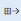

Anlagentypen
Important
Dynamics 365 for Finance and Operations hat sich zu speziell entwickelten Anwendungen entwickelt, mit denen Sie bestimmte Geschäftsfunktionen verwalten können. Weitere Informationen zu diesen Änderungen finden Sie im Dynamics 365-Lizenzierungshandbuch.
Dieses Thema erläutert, wie Sie Anlagetypen erstellen. Außerdem werden die Elemente beschrieben, die den Anlagentypen zugeordnet werden. Anlagentypen werden als allgemeinen Kategorien für Anlagen verwendet. Hierzu gehören CNC-Maschinen, Messausrüstung und Lkw-Motoren. Anlagentypen werden verwendet, um die Wartungsauftragstypen zu verwalten (Wartungsanlagen), Anlagen-Lebenszyklusstatus, Zähler, Anlageattribute, Bedingungsbewertungsvorlagen und Anlagemodelle, die als Anlage ausgewählt werden können. Wenn Sie eine Anlage erstellen, muss der Anlagetyp für angegeben.
Für jeden Anlagentyp können Abweichungen der Anlagentypeinstellung erstellt werden. Wenn Sie beispielsweise einen Anlagentyp haben, der „LKW“ ist, können Sie für diesen Anlagentyp Abweichungen für verschiedene Anlagenhersteller und Anlagenmodelle erstellen. Für jede Anlagentypeinstellung können Sie die erforderlichen Ersatzteile und Wartungspläne Ersatzteilen hinzufügen.
Zuerst richten Sie die erforderlichen Anlagentypen ein. Anschließend erstellen Sie die Anlagenmodelle, die den bereitgestellten Anlagentypen zugeordnet werden sollen. Schließlich erstellen Sie auf der Seite Anlagentypstandards alle Abweichungen für Anlagentypen, die für Ihre Ausrüstung erforderlich sind.
Einen Anlagetyp erstellen
Wählen Sie Anlageverwaltung > Einstellungen > Anlagentypen > Anlagentypen aus.
Wählen Sie Neu, um ein Anlagentyp zu erstellen.
Im Feld Anlagentyp geben Sie eine Kennung für den Anlagentyp ein
Geben Sie im Feld Name einen Namen ein.
Wählen Sie ein Anlage-Lebenszyklusmodell im Feld Anlage-Lebenszyklusmodell aus. Weitere Informationen zu Anlagenlebenszyklus und Anlagenlebenszyklusmodelle, finden Sie unter Anlagen-Lebenszyklusstatus.
Hier können Sie die Option Summe auf Ja festlegen, wenn die zusammengefassten Leistungskennzahlwerte (KPI) für Anlagen berechnet werden sollen, die diesen Anlagentyp haben.
Wählen Sie Speichern.
Wählen Sie im Inforegister Wartungsauftragstypen die Wartungsauftragstypen aus, die mit dem Anlagentyp verknüpft sein sollen:
- Um einen Wartungsauftragstyp auszuwählen, wählen Sie ihn im Feld Verbleibende Wartungsauftragstypen aus, und wählen Sie dann die Schaltfläche mit dem Pfeil nach rechts , um ihn in den Bereich Ausgewählter Wartungsauftragstyp zu verschieben.
- Um alle verfügbaren Wartungsauftragstypen auswählen, wählen Sie Schaltfläche  aus. Alle Wartungsauftragstypen werden aus dem Feld Verbleibende Wartungsauftragstypen in das Feld ausgewählte Wartungsauftragstypen übertragen.
- Um die Auswahl eines Wartungsauftragstyps zu löschen, wählen Sie ihn im Feld Ausgewählte Wartungsauftragstypen aus, und wählen Sie dann die Schaltfläche mit dem Pfeil nach links , um ihn in den Bereich Verbleibende Wartungsauftragstypen zu verschieben.
Sie können auch die Zähler auswählen, die dem Anlagentyp zugeordnet werden sollen. Auf dem Inforegister Zähler aktivieren Sie Ihre Auswahl, indem Sie die Methoden für Wartungsauftragstypen anwenden, die in Schritt 8 beschrieben werden. Weitere Informationen zum Einrichten von Zählern finden Sie unter Zähler.
Sie können auch die Attributtypen auswählen, die dem Anlagentyp zugeordnet werden sollen. Auf dem Inforegister Attributtypen aktivieren Sie Ihre Auswahl, indem Sie die Methoden für Wartungsauftragstypen anwenden, die in Schritt 8 beschrieben werden. Um dann die bevorzugten Reihenfolge der Attributtypen zu erstellen, wählen Sie im Feld Attributtypen ausgewählt den Attributtyp aus, und verwenden Sie die NACH-OBEN-TASTE und die NACH-UNTEN-TASTE, um sie zu verschieben. Die Sequenz der Attributtypen wird auf Anlagen angezeigt, die diesen Anlagentyp verwenden. Weitere Informationen zu Anlagenattributen finden Sie unter Attributtypen verwalten.
Note
Wenn Sie neue Attributtypen dem Inforegister Attributtypen hinzufügen, werden bestehende Anlagen automatisch mit diesen Informationen aktualisiert.
Sie können auch die Bedingungsbewertungsvorlagen auswählen, die dem Anlagentyp zugeordnet werden sollen. Auf dem Inforegister Bedingungsbewertung aktivieren Sie Ihre Auswahl, indem Sie die Methoden für Wartungsauftragstypen anwenden, die in Schritt 8 beschrieben werden. Weitere Informationen zu Bedingungsbewertungsvorlagen und - erfassungen, finden Sie unter Bedingungsbewertung
Das Inforegister Anlagenmodell zeigt alle Kombinationen von Anlagenherstellern und die Modelle an, die im ausgewählten Anlagentyp eingerichtet werden. Um die Kombinationen anzuzeigen, die gemäß dem Hersteller aufgeteilt sind, wählen Sie Anlagenmodell, um die Seite Anlagenmodell zu öffnen.
Auf der Seite Anlagenmodell können Sie Anlagenmodell-Anlagentyprelationen hinzufügen. Darüber hinaus können Sie auf der Seite Anlagentypen die Anlagenhersteller-Anlagen-Modellrelationen direkt einem Anlagentyp hinzufügen. Schließlich können Sie auf der Seite Anlagenmodell (Anlagenverwaltung > Einstellungen > Anlagen > Anlagenmodell) die Anlagenhersteller-Anlagenmodell-Anlagentyprelationen neu erstellen. Daher gibt es drei Möglichkeiten, Anlagenhersteller-Anlagenmodell-Anlagentyprelationen einzurichten und zu bearbeiten. Alle verfügbaren Kombinationen werden aus unterschiedlichen Perspektiven dargestellt, und Sie können Ihre bevorzugte Eingangsstelle auswählen, wenn Sie mit der Einstellung arbeiten.
Note
- Wenn Sie Zähler für einen Anlagentyp auswählen, werden die Auswahlen auf der Seite Zähler automatisch aktualisiert (Anlagenverwaltung > Einstellungen > Anlagen > Anlagentypen > Zähler).
- Die Felder im Abschnitt Details auf dem Inforegister Allgemein zeigt die Anzahl für Wartungsauftragstypen, Zähler, Attribute usw. an, die für den ausgewählten Anlagentyp eingerichtet werden.
Normalerweise werden Arbeitsaufträge, die manuell erstellt werden, der Fehlerwartung zugeordnet, während Arbeitsaufträge, die automatisch erstellt werden, der vorbeugenden Verwaltung zugeordnet werden. Wenn Sie manuell Arbeitsaufträge erstellen, können nur die Wartungsauftragstypen verwendet werden, die auf dem Inforegister Wartungsauftragstypen der Seite Anlagentypen aktiviert sind. Allerdings können automatisch erstellte Arbeitsaufträge alle Wartungsauftragstypen verwenden, die Sie auf der Seite Wartungsauftragstypen (Anlagenverwaltung > Einstellungen > Einzelvorgänge > Wartungsauftragstypen) erstellt haben.
Erstellen von Positionen für Anlagetypen
Wählen Sie Anlageverwaltung > Einstellungen > Anlagen > Anlagentypen > Anlagentypen einrichten aus. Aktivieren Sie alternativ Anlagenverwaltung > Einstellungen > Anlagen > Anlagentypen > Anlagentypen aus und wählen Sie einen Anlagentyp aus, und wählen Sie dann Anlagentypeinstellung.
Beim erstmaligen Verwenden von Anlagentypeinstellung finden Sie möglicherweise die Schaltfläche Kombinationen erstellen hilfreich. Sie können diese Schaltfläche verwenden, um alle Kombinationen eines Anlagenmodells auf einem Anlagentyp schnell zu erstellen. Wählen Sie Kombinationen erstellen aus, wählen Sie den Anlagentyp aus, um Kombinationen zu erstellen, und wählen Sie dann OK.
Note
Wenn Sie nicht alle Anlagentyp-Einrichtungskombinationen verwenden, die automatisch erstellt wurden, können sie eine Einrichtung löschen, indem Sie diese auswählen und dann Löschen wählen.
Wählen Sie Neu, um einen Anlagentyp manuell einzurichten.
Abhängig davon, wie die Anlagentypeinstellung sein soll, treffen Sie eine Auswahl auf Anlagentyp, Hersteller und Modell
Wenn eine Garantievereinbarung dem Anlagentyp zugeordnet ist, wählen Sie die Vereinbarung in den Feldern Kreditorengarantie und Debitorengarantie.
Auf dem Inforegister Ersatzteile aktivieren Sie Hinzufügen, um der ausgewählten Anlagentypeinstellung Ersatzteile hinzuzufügen.
Um ein Ersatzteil zu genehmigen, wählen Sie die Ersatzteilposition, und wählen Sie dann Genehmigen. Sie können mehrere Positionen zur Genehmigung auswählen.
Um zu sehen, ob ein Ersatzteil an anderer Stelle in der Anlagenverwaltung verwendet wird (beispielsweise in Verbindung mit Anlagen und Arbeitsaufträge), wählen Sie die Ersatzteilposition, und wählen Sie dann Artikel, die verwendet wurden, um die Seite Artikel, die verwendet wurden zu öffnen. Um alle aktiven Ersatzteile in der Liste anzuzeigen, aktivieren Sie das Kontrollkästchen Aktiv. Um nur genehmigte Ersatzteilen anzuzeigen, aktivieren Sie das Kontrollkästchen Genehmigt.
Auf dem Inforegister Wartungsplan aktivieren Sie Hinzufügen, um der ausgewählten Anlagentypeinstellung Wartungspläne hinzuzufügen.
Um einen Anlagentyp zu kopieren, der für eine andere Einstellung festgelegt wurde, können Sie die Kopierfunktion verwenden. Wählen Sie die Anlagentypeinstellung aus, um eine Einstellung zu kopieren, wählen Sie Einstellungen kopieren und wählen Sie die Anlagentypeinstellung aus, von der die Einstellungen kopiert werden sollen. Die Einstellungen der verschiedenen Optionen bestimmen, wie viele Informationen enthalten sind. Wenn Sie fertig sind, wählen Sie OK, um die Einstellungen zu kopieren.
Note
Wenn Sie viele Ersatzteilpositionen und Wartungsplanpositionen haben, die Sie wiederverwenden, ermöglicht die Kopierfunktion schnell und einfach, die Daten für viele Anlagentyp-Einstellungskombinationen einzurichten.
Ersatzteilen für die Anlagentypeinstellung
Wie im Abschnitt „Anlagentypeinstellungs-Position erstellen“ beschrieben, werden Ersatzteile auf Anlagenmodellen auf der Seite Anlagentypeinstellung installiert. Wenn Sie die Seite Anlagentypeinstellung öffnen, sehen Sie nur die Ersatzteile, die der ausgewählten Kombination eines Anlagentyps, Anlagenherstellers und Anlagenmodells zugeordnet werden. Um eine Liste aller Ersatzteildatensätze anzuzeigen, öffnen Sie die Seite Ersatzteile (Anlagenverwaltung > Abfragen > Ersatzteile).
Auf der Seite Ersatzteile können Sie neue Ersatzteile für vorhandene Kombinationen eines Anlagentyps, Anlagenherstellers und Anlagenmodells erstellen. Sie können entscheiden, ob Sie lieber Ersatzteildatensätze auf der Seite Anlagentypeinstellung oder der Seite Ersatzteilen erstellen. Die Seite Anlagentypeinstellung enthält eine Übersicht von Daten für die ausgewählte Kombination eines Anlagentyps, Anlagenherstellers und Anlagenmodells, während die Seite Ersatzteile eine vollständige Übersicht über alle Anlagentyppositionen enthält. Wenn die Seite Ersatzteile viele Datensätze enthält, könnte die Seite Anlagentypeinstellung Ihnen einen besseren Überblick geben.
Um zu sehen, ob ein Ersatzteil auf der ausgewählten Position an anderer Stelle in der Anlagenverwaltung verwendet wird (beispielsweise in Verbindung mit Anlagen und Arbeitsaufträge), wählen Sie die Ersatzteilposition, und wählen Sie dann Artikel, die verwendet wurden, um die Seite Artikel, die verwendet wurden zu öffnen.